My Year 2024: A Journey
Fabio Votta
December 31, 2024
My Year 2024: A Journey
Take a scroll through the highlights and milestones of my 2024! This year has truly been the culmination of many years of struggle and challenges that has led to a bombastic year 2024!
🗓️1️⃣ January
Microtargeting in Taiwan 🇹🇼
In January, Justin Ho and I launched a dashboard with Who Targets Me on how Taiwanese political parties are using Facebook and Instagram ads to target voters during the presidential and parliamentary elections in Taiwan. 🗳️✨
💡 Curious to learn more? Check out the dashboard here to explore the data! 🔗
And for a compilation of dashboards showing targeting strategies during more elections in the past years, feel free to explore the links shown here 🌍
🗓️2️⃣ February
Presenting at the NORFACE Conference in Vienna 🇦🇹
I attended the NORFACE Governance Final Conference at the University of Vienna. The conference brought together international scholars to discuss themes in democratic governance, such as polarization, disinformation, and citizen trust in institutions.
I was happy to present our manuscript, “Accepting Exclusion” (more on that later), alongside my great friend and colleague Sophie Minihold.
Beyond the academic discussions, it was a great time connecting with colleagues and friends and soaking in the historic beauty of the University of Vienna. ✨
🗓️3️⃣ March
Who Doesn(’t) Target You? 🌍
In March, the third paper of my dissertation was accepted at the Journal of Quantitative Description. This paper dives into (micro)targeting strategies used across 113 elections worldwide, shedding light on how political parties allocate their budgets for targeting and exclusion criteria. ✨
I was in Amsterdam when I got the news, which made it all the more special: since I might have felt like dancing a little. 💃
You can read the paper here: Targeting and Exclusion Across the World. 🔗
🗓️4️⃣ April
The Room Where It Happened 🎓✨
On April 19th, I successfully defended my PhD, marking the culmination of years of research, challenges, and growth. It’s hard to put into words the gratitude I feel for everyone who supported me along this journey. From colleagues to mentors, friends, and family, my paranymphs, and my partner, you’ve all shaped who I am today. 💙
The defense was both humbling and exhilarating. Thank you for all who were there on this day!
For anyone interested in diving into the work, you can find my dissertation here: fabio-defense.phd.
🗓️5️⃣ May
AlgoSoc AI Opinion Monitor 🤖📊
In May, Ernesto de Leon and I officially launched the AlgoSoc AI Opinion Monitor, a dashboard providing insights into public opinion on AI technologies in the Netherlands.
Together with the AlgoSoc consortium and Centerdata, we surveyed over 4,000 respondents to uncover how people use and trust AI tools like ChatGPT and MidJourney. Excited to see how this project evolves—stay tuned for updates! 🌟
Explore the full dashboard here: AlgoSoc Monitor. 🔗
🗓️6️⃣ June
ICA 2024 in Gold Coast, Australia 🌏✨
In June, I attended the ICA 2024 Conference in Gold Coast, Australia: my first time visiting the land down under!
The conference, themed “Communication and Global Human Rights”, was inspiring and packed with engaging presentations and discussions.
But the highlights didn’t stop there: I also had the chance to see wild kangaroos and whales for the first time together with Jin Wan, Johannes Gruber, and Ernesto de Leon! 🐋🦘
This made the trip truly special!
🗓️7️⃣ July
Visiting Taiwan 🐾🇹🇼
In July, I had the wonderful opportunity to visit Taiwan, connecting with fellow academics and discussing my research on microtargeting during the 2024 Taiwanese elections.
My personal (unexpected) highlight of the year: while exploring the countryside of northern Taiwan, I stumbled upon a giant dog statue at a temple. 🐕 This surprise discovery was a delightful moment of awe and wonder.
For more information about this temple, known as the Temple of the Eighteen Lords, you can look here: Temple of the Eighteen Lords.
🗓️8️⃣ August
Summer Vibes in Berlin ☀️🏖️
August was all about soaking up the summer in Berlin. One of the highlights was seeing Alligatoah perform live which was a fantastic experience. 🎶✨
I also embraced quintessential Berlin summer activities such as swimming in the beautiful lakes. 🏊♂️
🗓️9️⃣ September
Large Language Models 📚🤖
In September, Johannes Gruber and I were thrilled to have our chapter on Large Language Models (LLMs) accepted for the Encyclopedia of Political Communication (2025)! 🎉
Our chapter explores the transformative impact of LLMs like ChatGPT on political communication research, highlighting both their immense potential and the challenges they pose in regards to bias, validity, and reproducibility. ✨
For those interested in a sneak peek, you can read the pre-print here: Large Language Models 🔗.
🗓️🔟 October
“Accepting Exclusion” Published 📚✨
October also brought great news: Sophie Minihold and I published our article, “Accepting Exclusion: Examining the (Un)Intended Consequences of Data-Driven Campaigns,” in Media and Communication! 🎉
The study investigates the (un)intended consequences of data-driven campaigns during the Dutch elections of 2021 and 2023. In this study we shed light on who gets excluded but also how citizens perceive these exclusions.
You can read the full article here: Accepting Exclusion 🔗.
🗓️1️⃣1️⃣ November
“The Cost of Reach” Accepted 🎉📘
In November, my final dissertation paper, “The Cost of Reach: Testing the Role of Ad Delivery Algorithms in Online Political Campaigns,” was officially accepted for publication in Political Communication! 🎊
This study, conducted with Tom Dobber, Benjamin Guinadeau, Natali Helberger, and Claes de Vreese, explores the critical role of ad delivery algorithms in digital political advertising.
By collaborating with Dutch political parties, we uncover how these algorithms influence the cost of reaching different audiences and find some evidence of price discrimination where the same service did not lead to the same price.
For more, you can access the paper here: The Cost of Reach 🔗.
🗓️1️⃣2️⃣ December
Winning Big at a Hackathon! 🏆🤖
December ended on a high note as I teamed up with some incredible people: Miriam, Jakob, Theresa, and Simon to win a €15,000 prize at a politechathon organized by the Baden-Württemberg Stiftung! 🎉
Our project focused on developing and deploying an AI-generated content tracking tool to monitor the use of AI during elections.
Excited to see how this project evolves! Stay tuned for updates! 🌟
🎉 That’s A Wrap! 🎆
Thank you for scrolling through my 2024 highlights!
Thank you to all the amazing people, friends, colleagues, and beyond, who were part of my journey this year and will be part of the many years and journeys to come!
Here’s to another great year ahead! 🥂
Appendix
I used Nicola Rennie’s quarto implementation of {closeread} as a starting point to get this 2024 wrapped going.
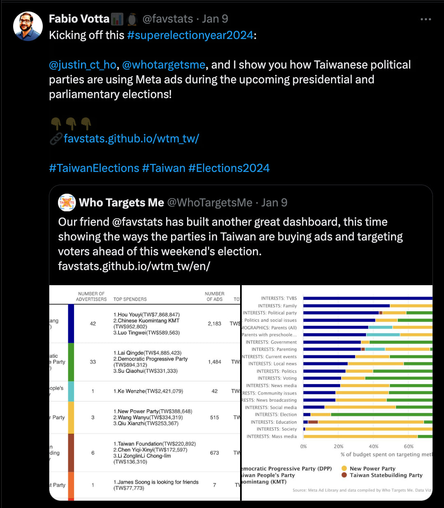
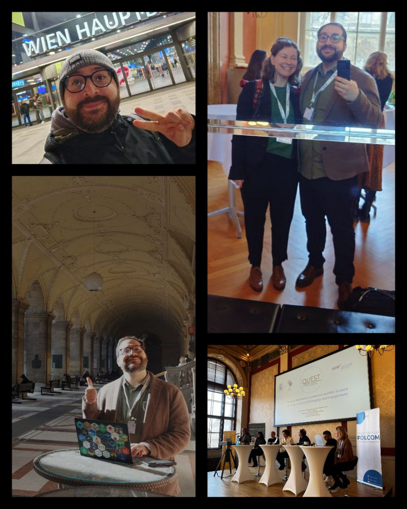
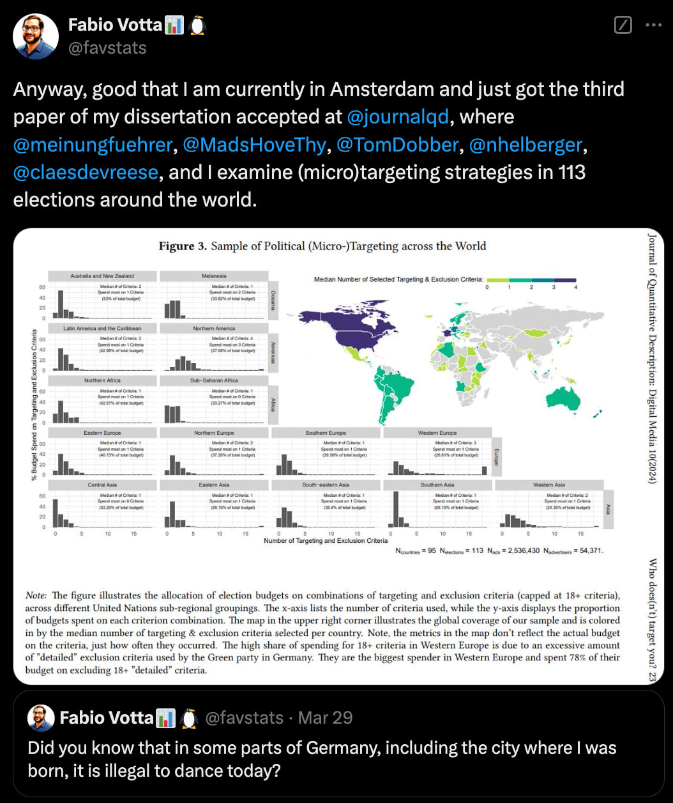
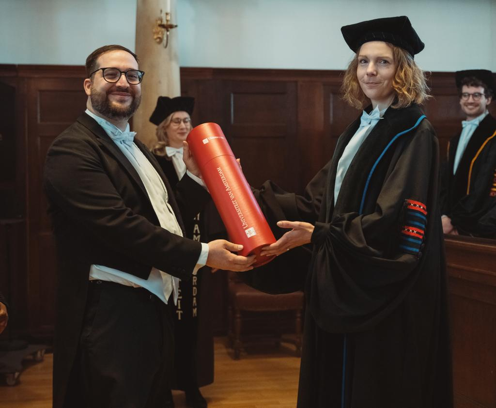
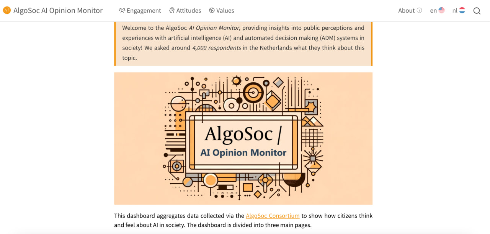
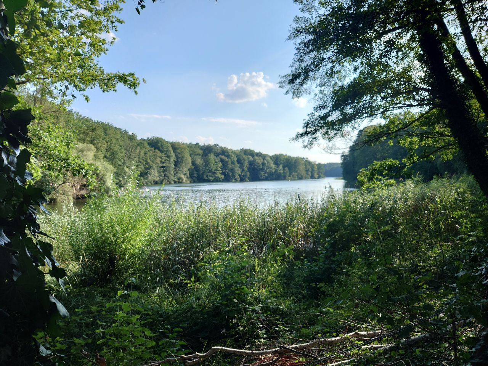
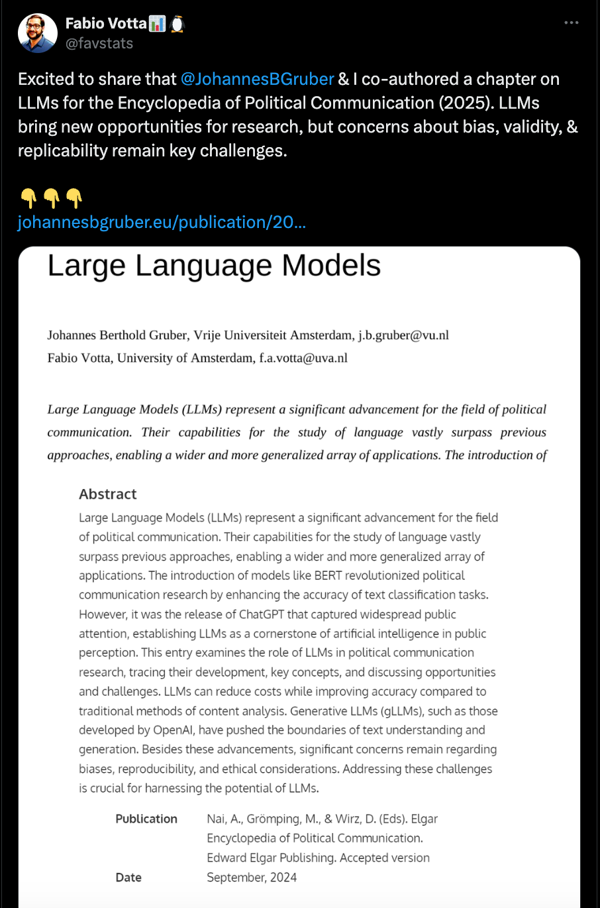
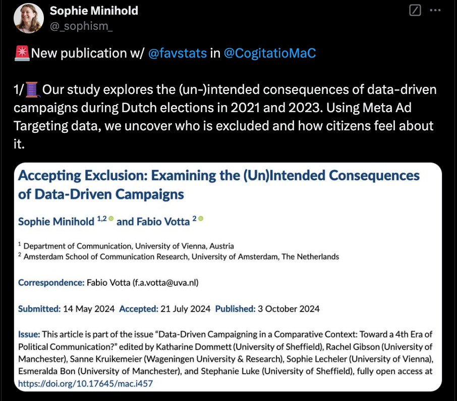
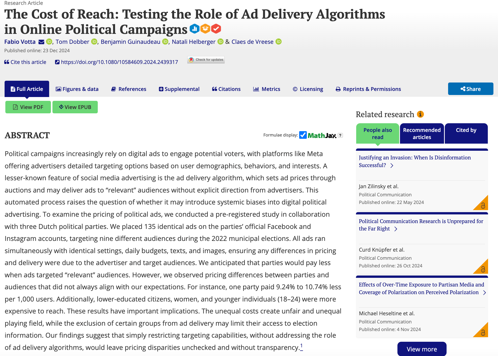
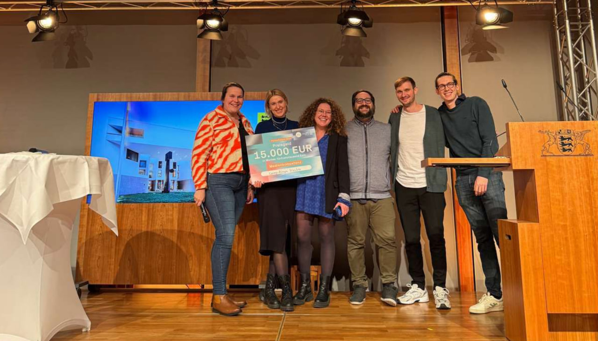
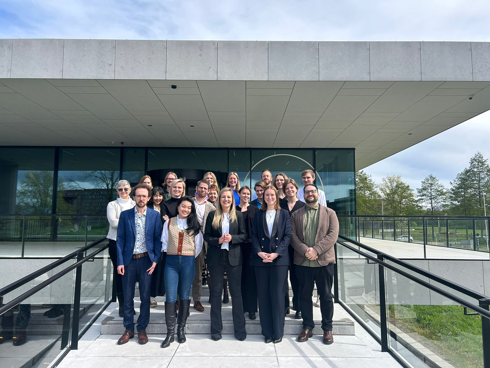